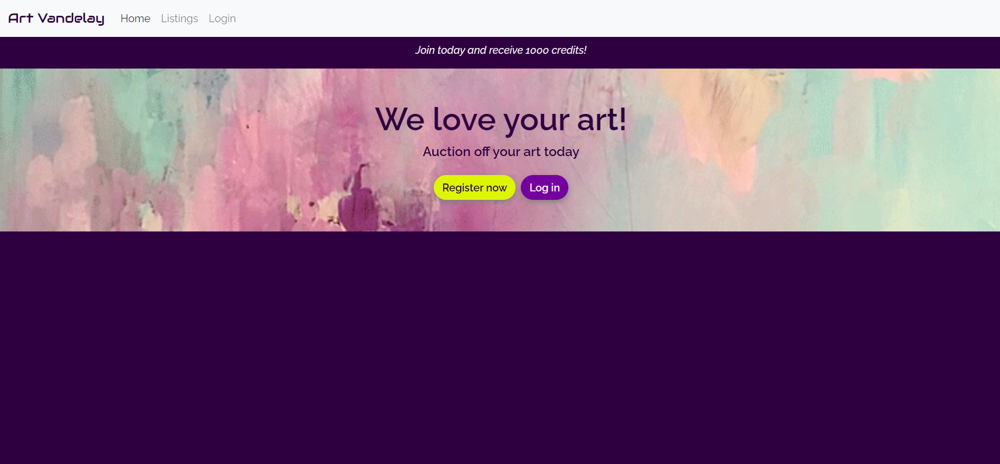
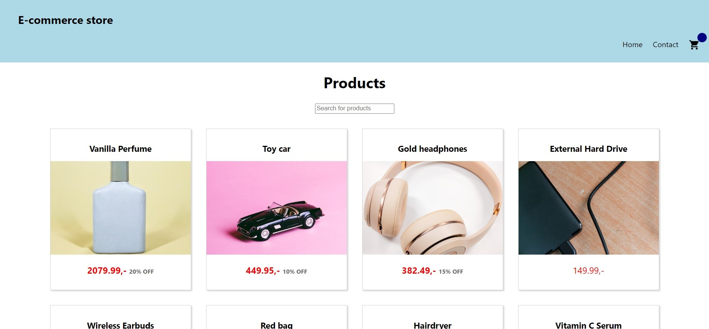
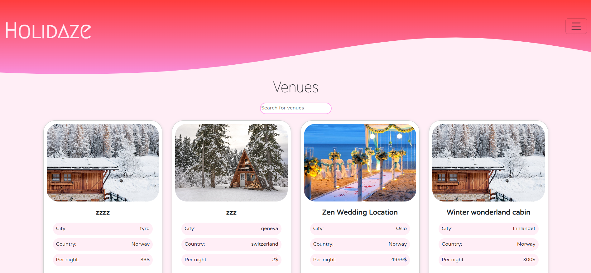
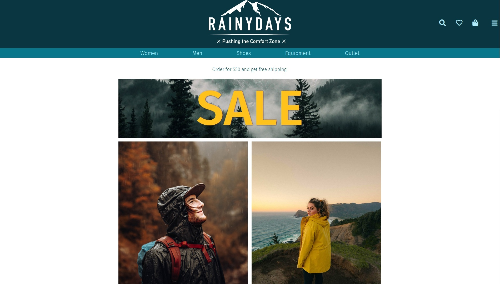
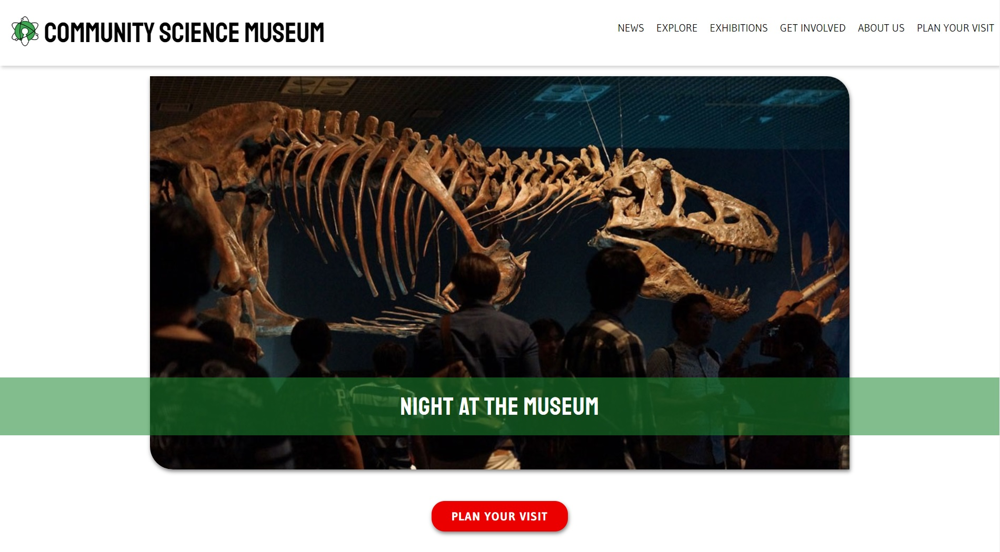
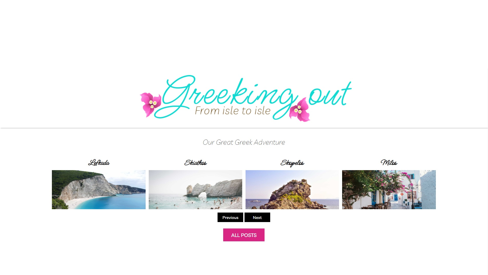

Portfolio
Art Vandelay
Art Vandelay is a fictional bidding site. This project was created so I could put into practice what I've learned after three semesters at Noroff. It features responsive layout and is WCAG compliant and accessible.
HTML
SCSS
JavaScript
 Github repo Live demoE-commerce store
This project is creating a fictional e-commerce store. This project was created so I could put into practice what I've learned during the "Javascript frameworks" course. It features responsive layout and is WCAG compliant and accessible.
React
CSS
 Github repo Live demoHolidaze
This project entails creating a website for a fictional accommodation booking company called Holidaze. It is targeted to young adults looking for new adventures. This project was created so I could put into practice my technical understanding and skills from my two years of studying Front-End Development. It features responsive layout and is WCAG compliant and accessible.
React
Bootstrap
 Github repo Live demoRainy Days e-commerce
Rainy Days is a fictional online shop selling men's and women’s rain jackets. They are designed for a range of different outdoor activities that enriches people's lives. This project was created so I could put into practice what I've learned during the "HTML & CSS" course in the fall 2021. It features responsive layout and is WCAG compliant and accessible. In the spring of 2022 I added some JavaScript to the project.
HTML
CSS
JavaScript
 Github repo Live demoCommunity Science Museum website
The Community Science Museum is a fictional interactive museum targeted at children and familys. It is designed to both be intriguing for children and informative for adults. This project was created so display what I've learned during the fall semester 2021. It has been created with accessibility and SEO in mind, and features a responsive layout that is WCAG compliant.
HTML
CSS
 Github repo Live demoGreeking Out blog
Greeking Out(from Isle to Isle) is a fictional travel blog about a couple traveling around the island of Greece. . The aim of this project was to display my technical understanding and skills based on my first year of studies. It considers accessibility and SEO, has been through user testing using Hotjar. The site also fetches REST API from WordPress for some of it's content and features a responsive layout that is WCAG compliant
HTML
CSS
JavaScript
 Github repo Live demo